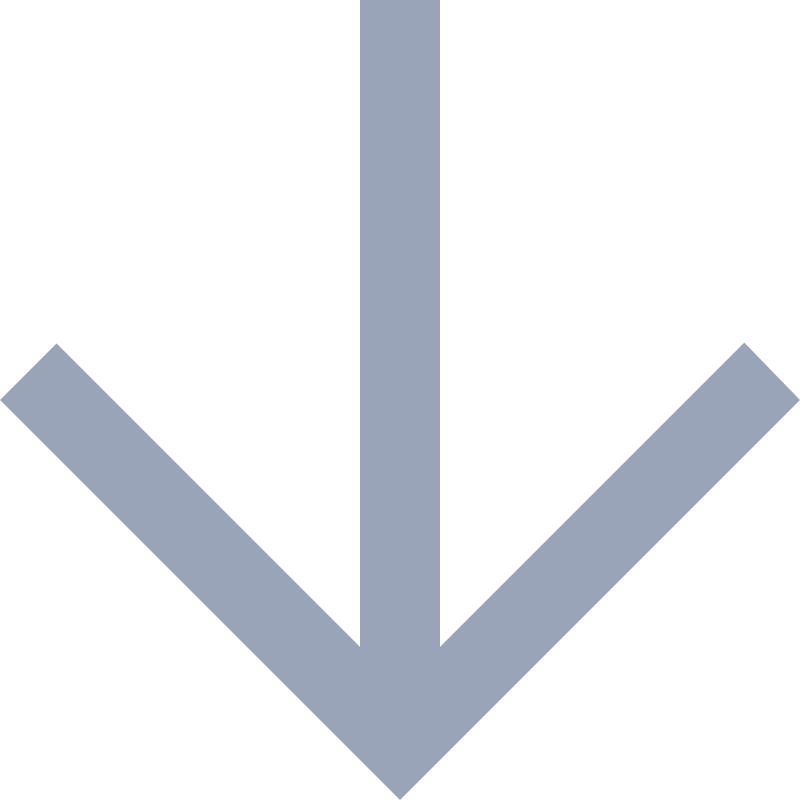
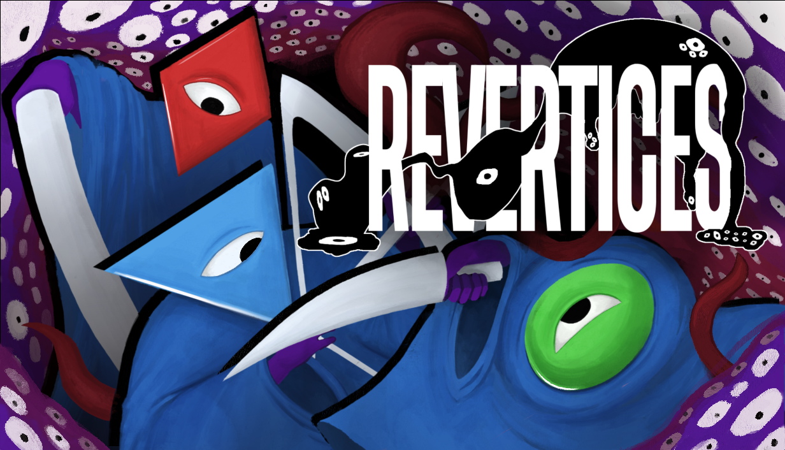
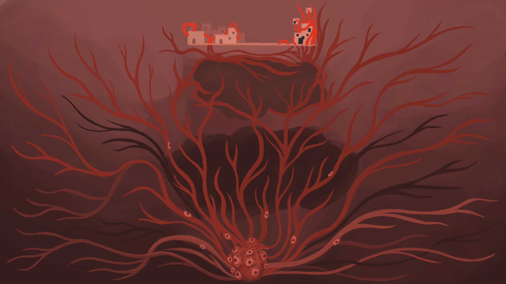
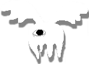
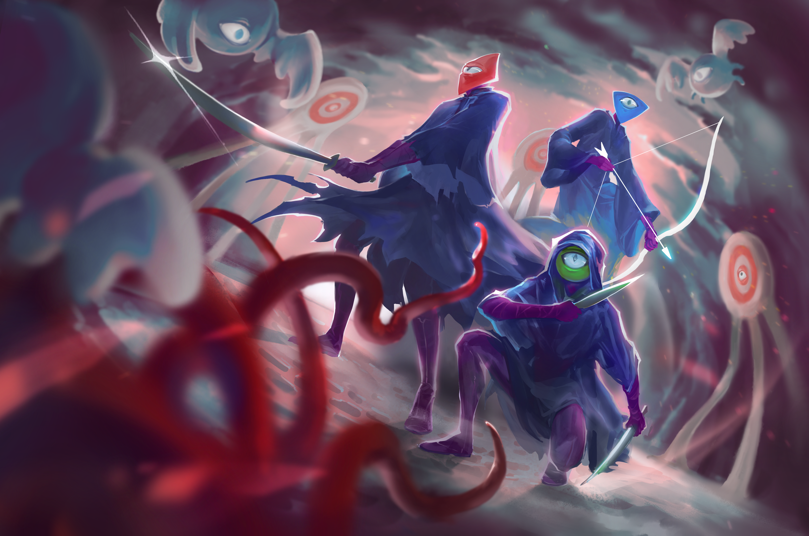

Watch the TrailerDirected by one of Cuphead's developers, Revertices is an action combat sidescroller where you will be forced to fight the corrupted remains of your friends
Your duty is to reset the cycle at all costs, but in doing so you doom yourself and your companions to repeat the same horrors
Battle
You are one of three possible survivors: the last line of defense against the Polygonal Entity.
Survive
Traverse three ruined biomes, mastering your moveset to do battle with the corrupted remains of your fellow soldiers.

Repeat
Slay the Heart.
Reset the cycle.
Try again...
Features

- Three unique playable characters
- Six unique boss battles with their own variations
- Multiple routes and endings
- An overarching story about survival and community
- Surreal imagery inspired by RPG Maker horror games
- Original soundtrack by Lex Feathers
- And more...

The Team Behind the Shapes
Revertices is developed by Fuzzy Void; directed by Kezia Adamo
We create strange, surreal games with just the right balance of grunge and polish.
No Gen AI in this game! Everything, from conception to final assets, is made by real people.
About the Team